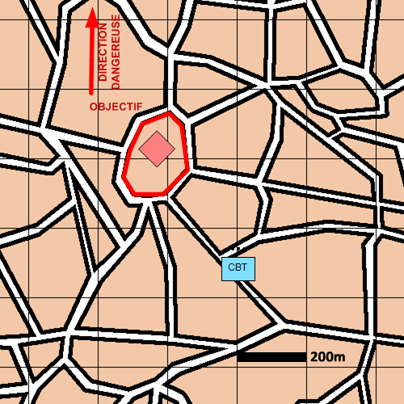

NIVEAU : Pion
ARME : Melee
MISSION : Contre Attaquer
NIVEAU : Pion
ARME : Melee
MISSION : Contre Attaquer
Schéma de modélisationContre-Attaquer |
Paramètres obligatoiresObjectif (parmi les objectifs suivants) Point Position à rejoindre et attaquer. Zone Zone à rejoindre et attaquer. Bloc Urbain Bloc Urbain à rejoindre et attaquer. |
|
Paramètres optionnelsDirection DangereuseLimite gauche / Limite droite Lignes de debouché [LD] Lignes de début et fin de mission [LDM/LFM] |
||
 |
Fiches missions |  |